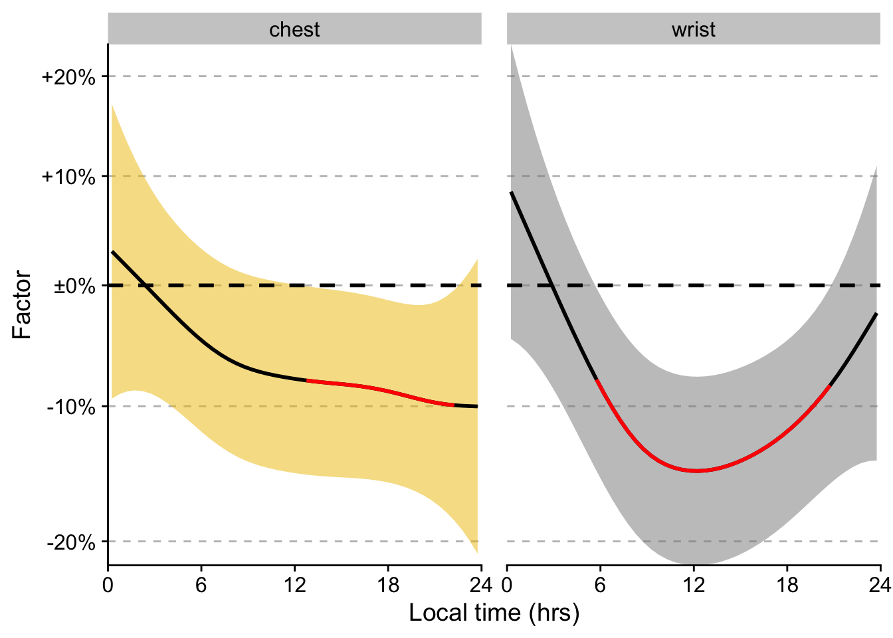

Additional notes: - position and site effects are modelled with the sz basis, that allows for the most identifiable modelling of parametric differences - Participant effects are modelled with the fs basis, which models the participant-effects as random smooths - melanopic EDI is scaled with log_zero_inflated() before model fitting.
Setup
library(tidyverse)
Warning: package 'ggplot2' was built under R version 4.5.2
Warning: package 'tibble' was built under R version 4.5.2
Warning: package 'tidyr' was built under R version 4.5.2
Warning: package 'readr' was built under R version 4.5.2
Warning: package 'purrr' was built under R version 4.5.2
Warning: package 'dplyr' was built under R version 4.5.2
Warning: package 'lubridate' was built under R version 4.5.2
── Attaching core tidyverse packages ──────────────────────── tidyverse 2.0.0 ──
✔ dplyr 1.2.1 ✔ readr 2.2.0
✔ forcats 1.0.1 ✔ stringr 1.6.0
✔ ggplot2 4.0.2 ✔ tibble 3.3.1
✔ lubridate 1.9.5 ✔ tidyr 1.3.2
✔ purrr 1.2.2
── Conflicts ────────────────────────────────────────── tidyverse_conflicts() ──
✖ dplyr::filter() masks stats::filter()
✖ dplyr::lag() masks stats::lag()
ℹ Use the conflicted package (<http://conflicted.r-lib.org/>) to force all conflicts to become errors
library(mgcv)
Loading required package: nlme
Attaching package: 'nlme'
The following object is masked from 'package:dplyr':
collapse
This is mgcv 1.9-4. For overview type '?mgcv'.
library(LightLogR)library(here)
here() starts at /Users/zauner/Documents/Arbeit/12-TUM/Repos_Misc/WearingPositionError_2026
library(gratia)
Warning: package 'gratia' was built under R version 4.5.2
Attaching package: 'gratia'
The following object is masked from 'package:stringr':
boundary
library(broom)
Warning: package 'broom' was built under R version 4.5.2
library(itsadug)
Warning: package 'itsadug' was built under R version 4.5.2
Loading required package: plotfunctions
Warning: package 'plotfunctions' was built under R version 4.5.2
Attaching package: 'plotfunctions'
The following object is masked from 'package:ggplot2':
alpha
Loaded package itsadug 2.5 (see 'help("itsadug")' ).
Attaching package: 'itsadug'
The following object is masked from 'package:gratia':
dispersion
library(cowplot)
Attaching package: 'cowplot'
The following object is masked from 'package:lubridate':
stamp
library(gghighlight)library(ggsci)library(gt)
Warning: package 'gt' was built under R version 4.5.2
Attaching package: 'gt'
The following object is masked from 'package:cowplot':
as_gtable
model_terms <-model_comparison |>mutate(signif = lower >0| upper <0,signif_id =consecutive_id(signif),.by = comparison) |>ggplot(aes()) +map(c(log10(seq(0.8, 1.2, by =0.1))), \(x) geom_hline(yintercept = x, linewidth =0.5, col ="grey", linetype =2)) +geom_ribbon(aes(x = Time, ymin = lower, ymax = upper, fill = position), alpha =0.5) +geom_hline(yintercept =0, linewidth =1, linetype =2) +geom_line(aes(x = Time, y = diff), linewidth =1) +geom_line(data = \(x) filter(x, signif),aes(x = Time, y = diff, group = signif_id), col ="red", linewidth =1) +# scale_color_manual(values = c(melidos_colors)) +theme_cowplot() +scale_fill_manual(values = colors[-1]) +scale_y_continuous(labels =c("-20%", "-10%", "±0%", "+10%", "+20%"),breaks =log10(seq(0.80, 1.20, by =0.1)))+scale_x_continuous(breaks =seq(0, 24, by =6)) +coord_cartesian(xlim =c(0,24), expand =FALSE) +guides(fill ="none") +labs(y ="Factor", x ="Local time (hrs)", fill ="Position") +facet_wrap(~position) +theme(panel.spacing =unit(1, "lines"),plot.caption =element_textbox_simple(),legend.position ="bottom")
model_terms

ggsave(here("output/figures/Fig_time_diff.pdf"))
Saving 7 x 5 in image
Interpretation
There are significant differences between glasses and chest in the afternoon, growing larger towards the evening in the 8 to 10% range. There are significant differences between glasses and wrist during most waking hours and in the 8 to 15% range. Both chest and wrist tend to underestimate the glasses position.